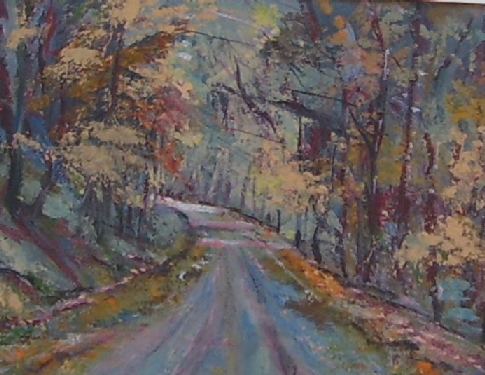
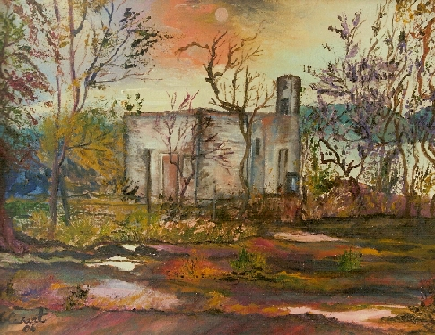
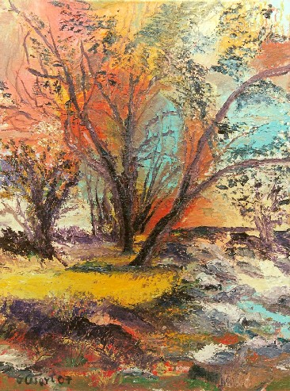
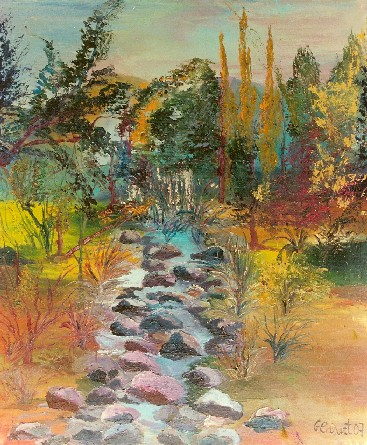
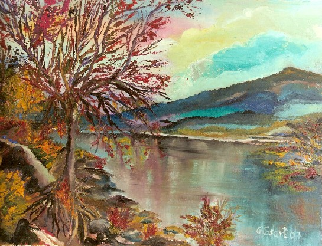
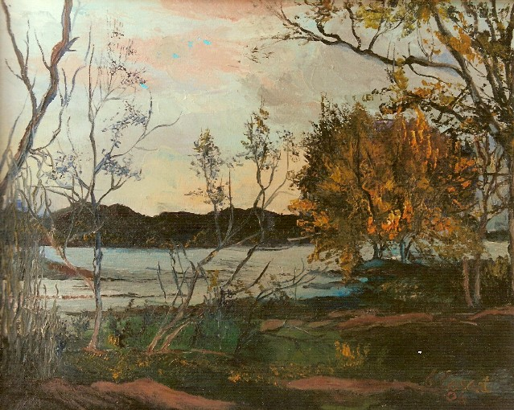

Continuamos con el Escondrijo de Duendes...
Continuamos con el Escondrijo de Duendes...
Graciela María Casartelli,
muestra sus pinturas junto a las poesías e inspiraciones que le
brindan amigos queridos. |
 "Romance en lilas y celestes" Pintura acrílica 30 x 40 cm, Graciela María Casartelli |
Niñez
Todos los momentos, Cristian David Juez de su obra "Mensajes del alma" https://www.facebook.com/david.juez.908?fref=ts
|
ESTE GRITO
Viajaré a mi interior desde distintos tiempos buscando encontrar la raíz desnuda para poder indagar mi curso, mi río y el por qué del hoy que me vive (entre secuencias de amor y tormento). Debo reproducir este grito, tal vez alguien escuche tal vez el Popol Vuh me sostenga cuando pregunte: ¿por qué estoy en América? Quiero armar el rompecabezas hasta llegar al runasimi. Quiero la memoria viva para inventar una alegría que permanezca, desdibujando reyertas para construir el jardín, en este tiempo, de paz verdadera y multiplicarlo en todos los tiempos para no más guerras.
Autor: Ime Biassoni (Argentina)
|
Décima a Isabel “Curando mis sinsabores” quedo prendido en momentos quedo amándote en el viento siempre he sentido rubores en mis tañidos menores de campana mariposa que lleva a mi pecho rosas porque además de aquí alojas en libro que pasa hojas veloces y numerosas. Somos destellos luz del mismo haz. Libro libre libró de dictadura en la más andaluza entre columnas que te rodean y ven tu pintura cómo convives con esas columnas sentadas allí miran con ternura. Libro libre es anciano muy orejudo tierra libre libró de dictadura pincel pinta en asiento angular mudo y pintando pintó pintura pura renace en un niño amable el barbudo. En floral florecida de las flores la imagen que se lee sin enredos mi amada desertora de tractores cuando pintas mi alma con tus dedos cómo enseñas acordes de colores. Presentada bandera más tenaz las manos de colores que navegan las caras de colores que navegan forman el cuerpo, cuello y faz de paz tus manos que las pintan y navegan... Qué les cuenta con manos elevadas que tengan siempre en cuenta abatimiento rostros pintados, calmas repensadas sin marcha inexistente sotavento acaso no son más caras pintadas. Los corazones que te estremecieron manos y manos de pinturas llevan como las rocas que te visitaron ah, pintora contigo se consuelan, viene a verte, te admiran y pitaron. A mi India que miró joya interior cómo te dejas el alma en el viento te pinta y vive sola en proyector que se convierten con tu sufrimiento con el primer después de tu color. Tu rostro dibujado me regresa: --soles posibles son buenos y dulces-- al bautismo de mar en la princesa; fueron sesenta y dos en agua dulce tu árbol de regador qué bien apresa. No es nuevo el productor de solanera ni Andalucía que habla con lo eterno vocaliza por sus manos terreras la pasión ancestral de arte moderno y España mi amantísima bandera. Volaran por las mares los cerrojos y dirá que no harán falta visados Comprenderás quinientos un antojos pómulos nariz frente enamorados y el misterio que emana de tus ojos. José Pómez (España) http://www.pomez.net |
|---|
NUESTRO ENCUENTRO
La profundidad de tu mirada Y sueño con un vuelo de gaviota libre sobre el mar, Rozo con una lluvia de placer Y así volver al nido de esperanzas
Autor:SANDRA GODDIO (Santa Fé, Argentina) |
Tarde de mar
Ayer tuve mar
tarde de mar
Vino la garza blanca
se posó cerca
sentí su pluma
paseo sutil
sobre mi cuerpo
No me dijo: -¡Adiós!
sólo pronunció un hasta luego.
Autor: Julia del Prado (Perú) (Sección: Mare Nostrum Mare Magnum)
Poemario; Tendido de sol maduro. Lima: edición de autora, fines del 2009.
|
|---|
NUEVE LUNAS...
Las hormonas revolucionan la sangre, Patokata (Uruguay)
|
|
|---|---|
Donde nace el camino y donde termina , que te conduce como si fuera el mismo, hay siempre una mano firme y amiga dispuesta a sostener en tu tropezar, es nuestro protector. Una sonrisa para la tristeza de tus labios, un oído al eco de cada una de tus palabras, un paso seguro y con firmeza que te acompañe en la soledad. Un ser vibrante que se da entero. Es la respuesta a cada una de nuestras necesidades. Que se ofrece sin medida y desea acompañar su alegría infinita Verónica A Díaz (Argentina) "MISS VERY" |
 "Camino" Acrílico- Graciela Maria Casartelli |
Miro a través de mi mano sostengo el cielo con mis sueños del árbol seco bailo con mi abanico mis silencios son esa vencida paloma toco mi pecho de piedra sobre mi espalda alguien explora dentro de mi ojo el fuego corta cuerdas de música un río arrastrando mis deseos.
Alicia Balista (San Isidro- Buenos Aires) |
Tú vives en mí
Quisiera que vivieras en mí. Yo te tengo en mis adentros, De mis ojos cayeron dos lágrimas, Estás en mi reminiscencia inquebrantable, En mi, tú no estás en el olvido, ¡No te buscaré! ¡No te encontraré! Katy Domínguez Gómez
|
 "Casita con duendes" de Graciela María Casartelli. Óleo sobre tela. |
Mis duendes...
tu presencia... ausente aquí; no en mí. Por mi ventana abierta penetra un aire suave... Siento el sol en mi boca Juego con mis duendes... conpañeros en mi soledad Ellos me entienden; me protegen... Se posan en mis manos, dibujan un corazón ... y toda yo se vuelve una espiga que vuela entre la hierba... en los bosques repletos de flores azules. |
Con la luz de la mañana viajé a tu estrella, por caminos de trigo, de oro, de tranparencia...
Mabel Hurtado. |
Mi duende solitario
|
se mira en los espejos ¿Dónde se irá ese duende,
|
 "Bajo el mismo cielo", pintura sobre tela, al óleo deGraciela María Casartelli. |
 "Creer en la magia" Pintura sobre tela al óleo de Graciela María Casartelli. |
ESPERO CREAS EN LA MAGIA
En ese lugar de ensueño En este rincón dorado Y mis amigos sonríen conmigo
|
 "Profundo" pintura al óleo sobre tela de Graciela María Casartelli.
|
Un lugar tan especial ¡La frescura de un lugar especial ,
el de mi bosque !
Inhala, exhala, respira profundo. ¡Cierra tus ojos!
El aire sopla suavemente, las hojas de los
árboles, Eleva tus pensamientos. Interioriza lo que
ves. Estás inmersa en tus pensamientos.
Estás rodeado de la naturaleza en todo
su esplendor.
¡Respira profundo! ¡Sueña! ¡Vive...! Ahora, con la paz que hay en tu corazón, Ahora que conoces este hermoso bosque, Aprenderás a comenzar una nueva vida
cada día, E-mail: silvannadoc@yahoo.com.ar |
DESDE EL AMOR.
DESDE UNA NOVELA, HASTA UNA PELÍCULA...; DESDE UNA SERIE, HASTA UNA PUBLICIDAD.
TODO TAN EXPRESIVO Y EMOCIONANTE.
MUCHAS VECES DRAMÁTICO Y SUFRIENTE; O, POR LO MENOS, CON COMPLICACIONES Y EMPECILLOS.
NO SOBRE GENERALIDADES TEÓRICAS MUY “ENFEITADAS”. Y SÍ DESDE LOS REGISTROS DE EXPERIENCIA DE QUIEN ESCRIBE. -------------------------
|
 "Enamorada" Òleo sobre tela de Graciela María Casartelli. |
En la vida cotidiana vemos los amaneceres como una luz que nos llama a la realización de las labores normales y rutinarias. Cuando la vida llega a retomar su capacidad
de asombro, nos permite abrir ese cofrecito interior que atesora todas
nuestras buenas experiencias: Ahora, que inicias a tener amaneceres con
asombro y esa ilusión de encontrar unas líneas, que hacen
sentir que la vida es bella, Vive preciosa Mujer, retoma lo que en esencia
eres, Cuando tengas tiempo, llega hasta su playa y siente su fuerza que finalmente, llega mansamente a tus pies... acariciándoles. Siente al atardecer el viento que envuelve
tu cuerpo;
|